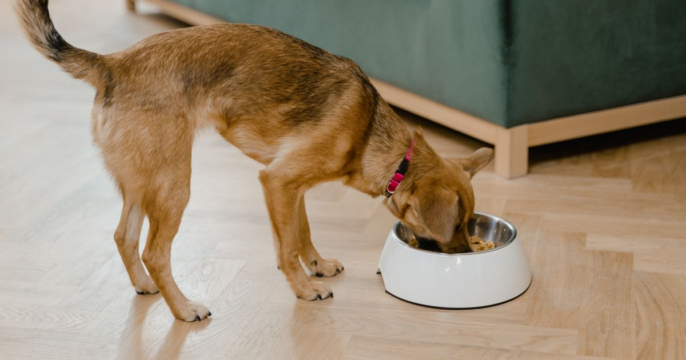
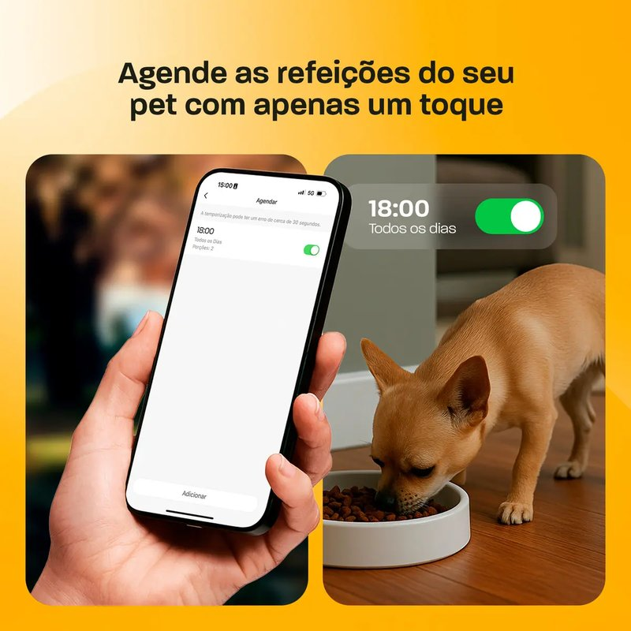
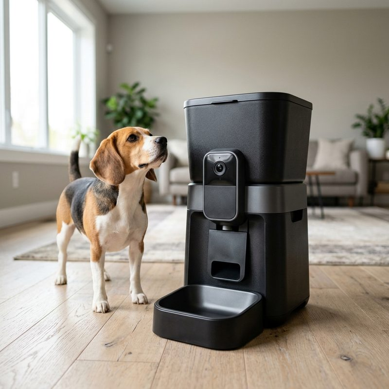
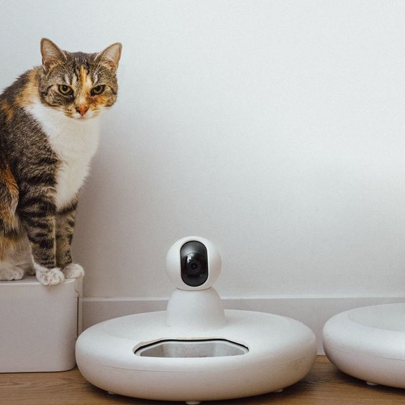
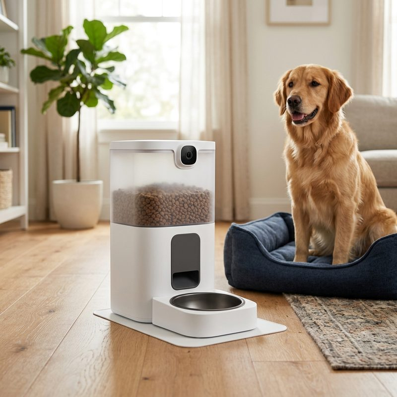
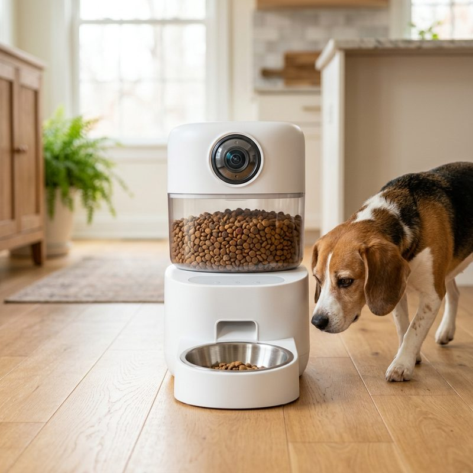
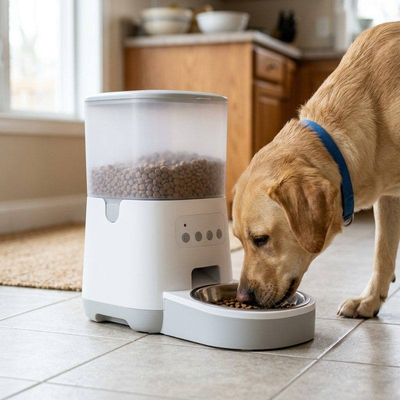
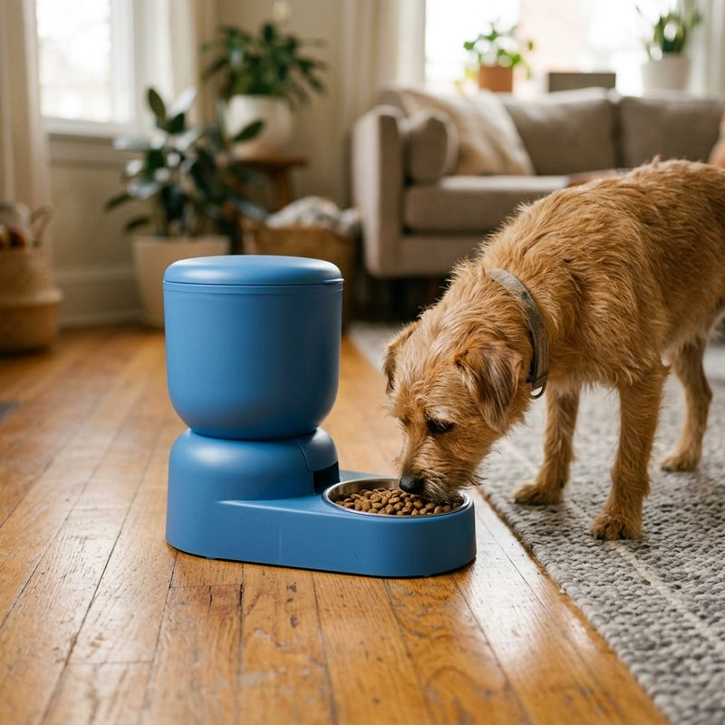

Comparamos 7 comedouros automáticos para cachorro realmente à venda no Brasil em 2026, de opções sem Wi-Fi a modelos com câmera e app completo: VDRBG 4L Wi-Fi, Dogis Tech DA010BR, Newpet 4L, Madog (com e sem câmera), VeryPet e PlayPet Blue. O melhor pra você depende de três coisas — se precisa de controle remoto, se quer câmera pra ver o pet à distância, e quanto está disposto a pagar por isso.
Key Takeaways
- O VDRBG 4L Wi-Fi tem o melhor equilíbrio entre app completo, ajuste fino de porções (1 a 40) e preço entre os modelos com controle remoto.
- Quem quer câmera e suporte nacional formal com garantia de 12 meses deve priorizar o Dogis Tech DA010BR (R$ 799, ou R$ 759,05 no Pix).
- O Newpet 4L é a opção mais barata entre os modelos de 4L+ pra quem não precisa de Wi-Fi nem câmera.
- O Madog com câmera (R$ 569,91 no Pix) tem o melhor custo-benefício entre os modelos com visão noturna e microfone.
- Para cães de porte grande, priorize reservatórios de 4L ou mais — o PlayPet, com cerca de 2kg de capacidade, exige reabastecimento mais frequente.
guia completo de comedouro automático para pet
| Produto | Preço aprox. | Capacidade | Wi-Fi/App | Câmera | Nota |
|---|---|---|---|---|---|
| VDRBG 4L Wi-Fi | Faixa intermediária-alta | 4L | Sim | Não | 8.7 |
| Dogis Tech DA010BR | R$ 759-799 | 6L | Sim | Sim (Full HD) | 8.4 |
| Newpet 4L | Faixa intermediária | 4L | Não | Não | 8.3 |
| Madog com Câmera | R$ 569,91 (Pix) | 6L | Sim | Sim (visão noturna) | 8.2 |
| VeryPet com Câmera | R$ 699-999 | Até 6L | Sim | Sim (1080p) | 7.9 |
| Madog sem Câmera | R$ 399,90 | 6L | Sim | Não | 7.6 |
| PlayPet Blue | R$ 559-799 | ~2kg | Sim | Opcional | 7.0 |

Entre os modelos com controle remoto, o VDRBG 4L Wi-Fi tem o app mais completo e o ajuste de porção mais fino (1 a 40 por refeição) via app Tuya, com gravação de voz incluída. É o modelo com melhor relação entre recursos e preço para quem quer monitorar e ajustar a alimentação à distância.
Leia o review completo do VDRBG 4L Wi-Fi
🐾 Confira o preço e a disponibilidade atual no Mercado Livre.
Ver no Mercado LivreLink de afiliado: podemos receber uma comissão por compras feitas através deste link, sem custo adicional para você.

A Dogis Tech é marca nacional com loja própria, o que significa suporte e garantia formal de 12 meses — um diferencial real frente a marcas vendidas só por terceiros em marketplace. O modelo DA010BR traz 6L de capacidade, câmera Full HD com visão noturna, áudio bidirecional e até 20 refeições programáveis por dia. É o mais caro do grupo com câmera (R$ 799, ou R$ 759,05 no Pix, consultado em dogis.com.br em 11/10/2026), mas compensa com a maior capacidade e suporte formal (Dogis, retrieved 2026-10-11).
🐾 Confira o preço e a disponibilidade atual no site oficial.
Ver no site da DogisLink direto para o site oficial do fabricante — não é um link de afiliado, não recebemos comissão.

O Newpet 4L é um dos modelos com destaque de "Mais Vendido" na categoria no Mercado Livre. Combina capacidade de 4 litros e gravação de voz de até 12 segundos, funcionando via tomada ou pilhas — sem depender de Wi-Fi ou app. Para quem não tem rede estável perto do comedouro, ou simplesmente não quer lidar com configuração de app, é a opção mais direta do grupo.
Leia o review completo do Newpet 4L
🐾 Confira o preço e a disponibilidade atual no Mercado Livre.
Ver no Mercado LivreLink de afiliado: podemos receber uma comissão por compras feitas através deste link, sem custo adicional para você.

O Madog com câmera entrega Wi-Fi dual-band, câmera Full HD com visão noturna e microfone bidirecional via app PetZero, por R$ 569,91 no Pix (de R$ 890), consultado em madog.com.br em 11/10/2026 — é o preço de um modelo intermediário sem câmera em outras marcas. Tem 6L de capacidade e até 100 porções por refeição, mas precisa ficar na tomada para manter o Wi-Fi ativo; o backup de pilhas D não sustenta o controle remoto sozinho (Madog, retrieved 2026-10-11).
🐾 Confira o preço e a disponibilidade atual no site oficial.
Ver no site da MadogLink direto para o site oficial do fabricante — não é um link de afiliado, não recebemos comissão.

O VeryPet é o único do grupo com bateria interna recarregável (2500mAh), o que dá mais autonomia em quedas de energia que os concorrentes a pilha. Tem Wi-Fi, câmera Full HD 1080p com visão noturna e compatibilidade com Alexa. O ponto de atenção é o preço: o site oficial lista R$ 549 (sem câmera) e R$ 849 (com câmera), mas anúncios de terceiros mostram variações de até R$ 150-250 — vale comparar antes de comprar. Nota: o domínio oficial da VeryPet não respondeu na data de publicação; confira a disponibilidade atual no Mercado Livre antes de decidir.
🐾 Confira o preço e a disponibilidade atual no site oficial.
Buscar VeryPet no Mercado LivreLink direto para o site oficial do fabricante — não é um link de afiliado, não recebemos comissão.

Versão mais barata da Madog, sem câmera: R$ 399,90 (de R$ 690), com 6L de capacidade, programação via smartphone e gravação de voz de até 10 segundos, em até 6 refeições por dia. Bom equilíbrio pra quem quer app sem pagar pela câmera, embora eu não tenha encontrado confirmação de compatibilidade com Alexa ou Google Assistant para este modelo específico (Madog, retrieved 2026-10-11).
🐾 Confira o preço e a disponibilidade atual no Mercado Livre.
Ver comedouros Madog no site oficialLink direto para a categoria do site oficial da Madog — não é um link de afiliado, não recebemos comissão.

A PlayPet se descreve como a primeira marca brasileira de comedouro automático acionado por aplicativo. O modelo Blue sem câmera custa a partir de R$ 559; com câmera e visão noturna, R$ 790-799,90. É o reservatório mais compacto do grupo (cerca de 2kg de ração), o que exige reabastecimento mais frequente que os concorrentes de 4-6L — pouco indicado para cães grandes ou tutores que viajam por vários dias (Americanas, retrieved 2026-10-11).
🐾 Confira o preço e a disponibilidade atual na Americanas.
Buscar PlayPet no Mercado LivreLink de busca — não é um link de afiliado, não recebemos comissão.
Orçamento apertado, sem Wi-Fi em casa: Newpet 4L ou Madog sem câmera.
Quer controle remoto com bom app, sem pagar por câmera: VDRBG 4L Wi-Fi.
Quer ver e ouvir o pet à distância, com suporte nacional formal: Dogis Tech DA010BR.
Quer câmera pelo menor preço possível: Madog com câmera.
Se preocupa com queda de energia e quer bateria própria: VeryPet.
Cão pequeno, pouco espaço em casa: PlayPet Blue.
vale a pena um comedouro automático — prós, contras e preço
Se você tem cão e gato em casa, vale entender antes qual a diferença entre comedouro automático para gato e para cachorro antes de decidir o modelo.
Cães maiores comem mais rápido e em maior volume, o que expõe defeitos de calibração com mais facilidade do que em gatos ou cães pequenos. Reclamações de "porção errada" aparecem com mais frequência em relatos de tutores de cães grandes — provavelmente porque o erro percentual da calibração se torna mais perceptível em porções maiores. Na prática, vale testar a calibração do comedouro nos primeiros dias, independentemente do modelo escolhido, e priorizar reservatórios de 4L ou mais (todos da lista, exceto o PlayPet) para reduzir a frequência de reabastecimento.
As notas e recomendações deste ranking foram construídas a partir de especificações técnicas divulgadas pelos fabricantes e vendedores, cruzadas com preços verificados em sites oficiais e marketplaces nas datas indicadas em cada produto. Não realizamos teste físico simultâneo dos 7 aparelhos — os dados de capacidade, recursos e preço refletem o que consta nos anúncios e sites oficiais verificados na data de consulta. Preços de produtos eletrônicos mudam com frequência; confirme o valor atual antes de comprar. Veja nossa política editorial e de afiliados para entender como selecionamos e verificamos produtos.
Não existe um único melhor comedouro — depende da rotina e do orçamento. Para controle remoto com bom custo-benefício, o VDRBG 4L Wi-Fi fica no topo. Para quem quer câmera com suporte nacional e garantia formal, o Dogis Tech é a opção mais robusta. Para quem não precisa de Wi-Fi, o Newpet 4L entrega capacidade e gravação de voz por um preço bem menor.
Depende do que você quer monitorar. Se o objetivo é só garantir horário e porção certos, um modelo sem câmera como o Newpet 4L ou o Madog sem câmera resolve por menos dinheiro. Se você quer ver e ouvir o pet remotamente, vale considerar Madog com câmera, VeryPet ou Dogis Tech — nessa ordem de preço.
O Newpet 4L não depende de Wi-Fi nem app: a programação de horários e porções é feita direto no aparelho, com gravação de voz incluída. É a opção mais indicada para quem não tem Wi-Fi estável perto do local de alimentação do cão.
Sim. Cães maiores comem mais rápido e em maior volume, o que expõe defeitos de calibração com mais facilidade. Vale testar a calibração do comedouro nos primeiros dias e, para cães grandes, priorizar os modelos de 4L ou mais (VDRBG, Dogis Tech, Newpet, Madog) em vez do PlayPet, que tem reservatório menor.
Não existe um único "melhor" comedouro automático para cachorro — existe o melhor para a sua rotina e seu orçamento. Se controle remoto com bom app é prioridade, o VDRBG 4L Wi-Fi é a escolha mais equilibrada. Se você quer câmera com suporte nacional formal, o Dogis Tech DA010BR vale o preço mais alto. Se o orçamento é a prioridade e você não precisa de Wi-Fi, o Newpet 4L segue sendo a opção mais direta — e o Madog com câmera é o jeito mais barato de ter visão noturna e microfone em casa.
melhor alimentador automático para gatos
Tem gato em casa também? Veja melhor comedouro interativo para gato: guia completo 2026.
Escrito pela Equipe Smart Pet Gadgets. Veja como comparamos preços e avaliações na nossa política editorial.
Nildo Alves — tutor de pets e curador de produtos no Smart Pet Gadgets. Pesquisa especificações de fabricante, dados de mercado e fontes veterinárias publicadas por terceiros para ajudar outros tutores a escolher melhor.
Sobre o Smart Pet Gadgets · Contato · Política editorial e de afiliados